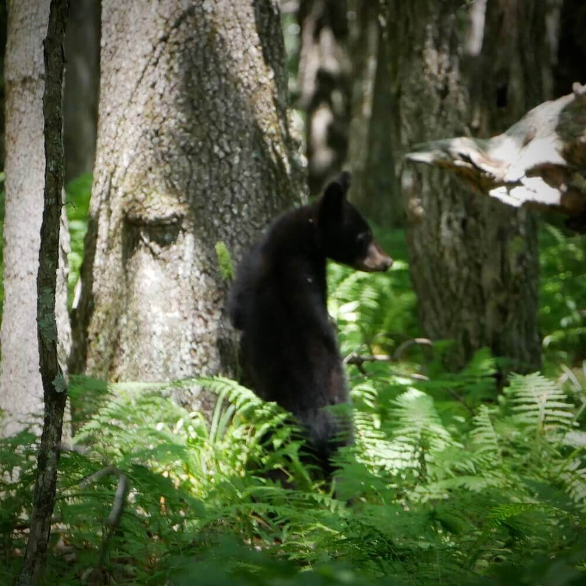

Virginia is for Lovers Bears
August 5, 2017
Highlights
Luray Caverns
Shenandoah National Park
Skyline Drive
Blue Ridge Parkway
George Washington National Forest
Natural Bridge State Park
Our journey to San Diego started August 1st in Arlington, Virginia. After 2 hours of highway we were descending 260 feet deep into Luray Caverns. A $20 admission seemed pricey (even at a discount), but in the end was totally worth it. The rooms of the caverns were enormous and unlike anything we had ever seen. Dream Lake, with its perfectly still reflections of hanging stalactites, was a highlight of the tour.
From Luray, we headed straight to Shenandoah National Park to begin our 100-mile journey down Skyline Drive. Shenandoah was so beautiful that we had to fight ourselves not to pull over at every single overlook. Halfway down the park we saw a mama bear and two of her cubs on the side of the road. Later, that exact same scene was re-enacted with raccoons. Near the end of the drive, we hopped out of the car for a short hike to Doyles River Falls.
Exiting Shenandoah, we took the equally beautiful Blue Ridge Parkway through the George Washington National Forest and camped there for the night.
Tales from the Tent...
A Midnight Intruder
by Jackie
The night began when we pulled off of the Blue Ridge Parkway hoping to find a decent spot for our tent. We pulled into a picnic area, packed our camping bags, and went down an unmarked trail looking for a clearing. After settling for a spot by a short stone wall, we pitched our tent and went to sleep.
A few hours later, Nick and I woke to the heavy steps of an animal by our tent. It moved slower than our swift visitors from earlier that night - a deer and a coyote. This time, the creature’s steps were loud and slow as if prowling the area for something. I couldn't 'bear' to move . I figured I was a dead woman anyway.
If this bear had decided to push on our tent walls and realize that our shelter stood zero chance to its weight; or if this bear had tripped up on the rope we had tied to the tree 3ft away and pulled off the tarp from above us and got hit in the face and had gotten startled; or if this bear smelled the Clif bar I had eaten earlier and took it upon itself to retrieve this bar from my stomach then, well, I don't know what I would do but lie there.
Luckily none of those things happened. We listened carefully as the bear circled our tent. He smelled like a homeless person...of bad breath and hot urine. He came right up to the wall on Nick's side and snorted. At this point, Nick was sitting up looking out of the only window we had. He laid his hand gently on my leg making sure I was awake. He was worried I'd wake up startled and react, but I was certainly awake and already planning my funeral in my head. I asked Nick if he had a weapon and he says that he has a knife. I think maybe a summer funeral would be pleasant. Then the bear walked away and we listened as his steps grew fainter and fainter.
To wrap up our time in Virginia, we detoured to Natural Bridge State Park, an enormously tall land bridge that was once owned by Thomas Jefferson. The scale of the formation made us reflect on the power of wind and water to shape the earth.
Next stop, North Carolina!